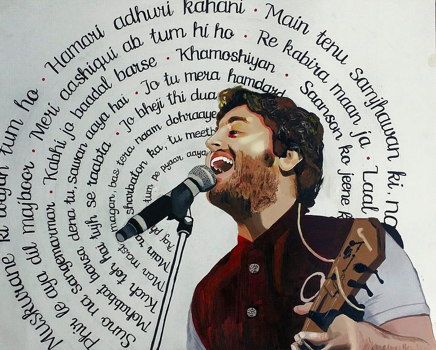
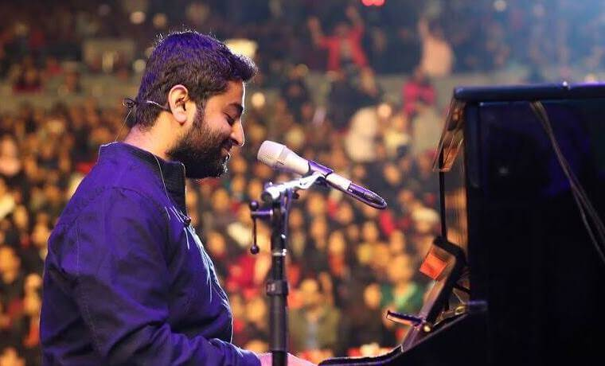
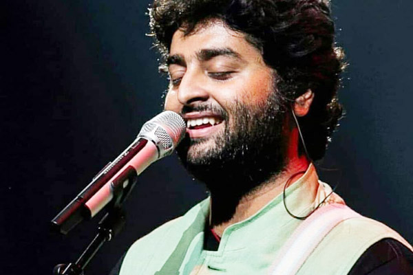
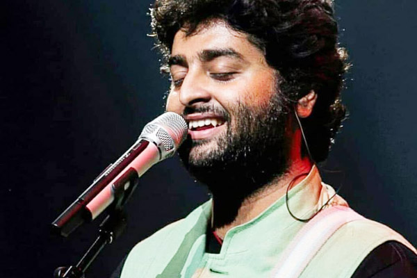
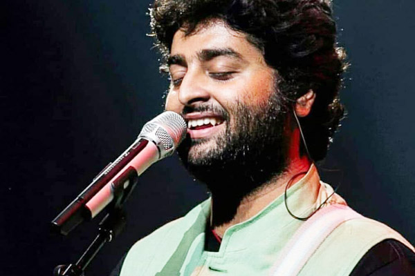

Arijit Singh
If there is one voice that does justice to both love and heartbreak, it is that of Arijit Singh.

Tum Hi Ho . Agar Tum Sath Ho . Phir Bhi Tumko Chahunga . Channa Mereya . Humari Adhuri Kahani . The Breakup Song . Galti Se Mistake . Nashe si Chad Gyi . Enna Sona . Chahun Main Ya Na . Chal Wahan Jaate Hai . Aaj Dil Shayrana . Aa Raat Bhar . Ae Dil Hai Mushkil . Pal Pal Dil Ke Paas . Muskurane Ki Wajah Tum Ho . Phir Kabhi . Raabta . Samjhawan . Sanam Re . Teri Meri Kahaani . Zaalima . Khairiyat . Bekhayali .
Listen Your Favorite Song Here :
>>
Picture Gallery


 
